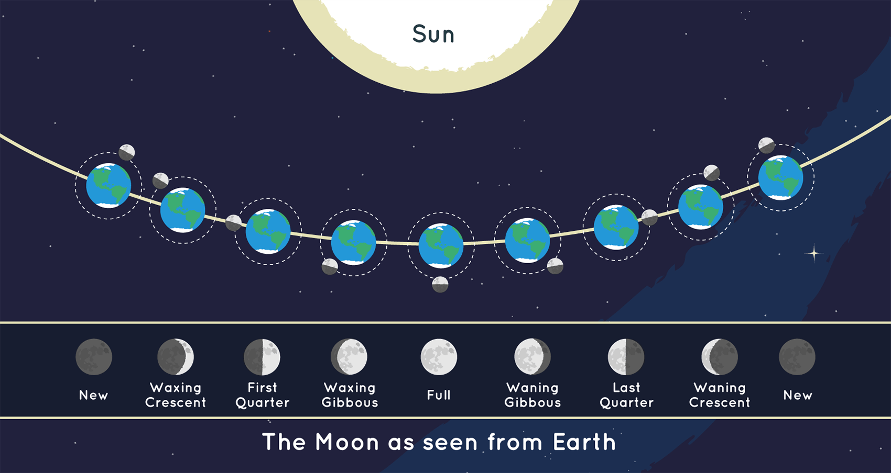
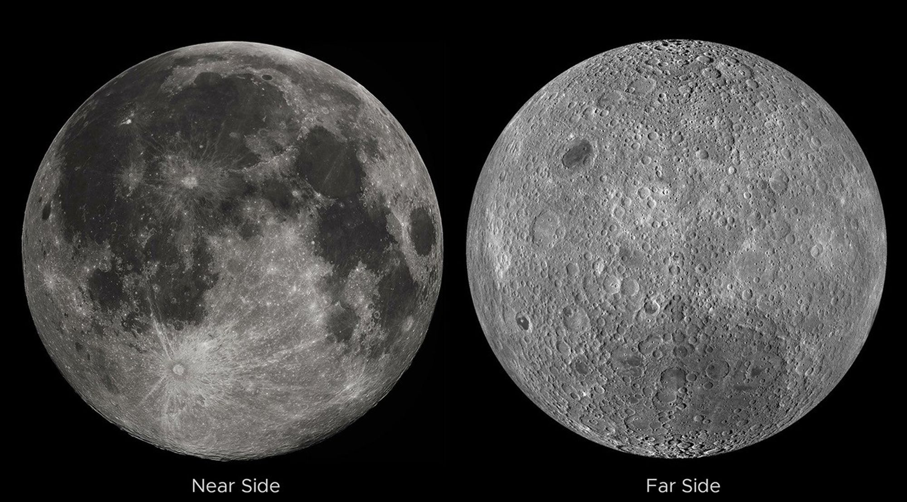

月亮的几种时间
月亮给人的印象有两种看似相反的稳定性。一方面，它每天都在变：刚入夜时西边的一弯细月，几天后成为半轮，随后渐渐饱满，又在后半夜和清晨变瘦。另一方面，月面上熟悉的深浅斑纹似乎总在同样的位置：那张被无数人看成兔子、人物或其他形象的“脸”，并没有像地球仪那样每天换一个方向给我们看。形状在变，面孔却大致不变。要同时解释这两件事，就必须分开光照、视角与月球自身的转动。[44]
更有意思的是，月亮并不只有一种周期。相对远处恒星回到原来方向，约需 27.32 日；从一次新月到下一次新月，平均却要 29.53 日；地球与月球之间的距离还在更长时间尺度上缓慢变化。我们习惯把这些现象统称为“月亮绕地球转”，但一个公转圆圈无法独自容纳它们。月球是一扇很近的窗口，透过它可以看见参照系、潮汐、能量耗散，以及我们怎样从精确测量中重建天体历史。[46][51]
那一轮明月，其实并不擅长反光
月光主要来自被月面反射的太阳光。虽然满月在黑暗天空中非常醒目，月面整体却不是洁白高反射率的表面，它反射的入射阳光只是较小的一部分。明亮的视觉印象既与太阳照明有关，也与背景很暗有关；不能因为月亮比周围天空亮，就把它想成一颗白色小太阳。同样，把曝光不同的月球照片放在一起，不能直接比较月面的真实反射率。[45]
肉眼可见的深浅区域又有真实的地质含义。许多较暗的“月海”是古老玄武质熔岩形成的平原，并没有像名称那样盛着海水；较亮的高地区域具有不同的岩石组成与历史。陨坑、射纹和熔岩平原彼此叠加，记录了撞击与内部活动的先后。把这些斑纹当作辨认近地一面的标记很方便，但它们首先是地质结构，而不是月球为了让我们识别而留下的图案。[43][53]
月球平均距离地球约 38.4 万千米，直径约 3475 千米。因为离我们足够近，它在天空中展开成大约半度宽的圆面，人眼可以辨认亮暗区域，小型望远镜还能把地形细节展开。这个圆面正是理解月相的关键：我们不是只接收一个点的亮度，而是在观察一个立体球体被光照亮后，投影到天空中的形状。[56]
两个半球的交叠，形成一个月的形状
在忽略日月食、地照光和细微地形影响的通常情形下，太阳照亮月球朝向太阳的那一半；地球上的观察者，则只能看见朝向自己的那一半。两者不是同一个半球。随着月球绕地球运动，受光半球与可见半球的交叠方式改变，我们便看见新月、蛾眉月、弦月、凸月和满月。改变的是可见受光部分，不是月球本体在变大变小，也不是每天有一块实体从月球旁边削掉。[44]

图：上方用轨道位置解释照明，下方是地球所见月相；每个地球小图代表不同时间，不是同时存在的多个地球。下方左右亮的约定依赖图像朝向。图中距离和尺寸均未按比例。 署名：NASA/JPL-Caltech。出处与使用条件见素材记录。
当地球所见的月球方向接近太阳方向时，我们主要面对月球未被太阳照亮的一面，形成朔，也就是天文学意义上的新月。月球运行到从地球看与太阳大约相隔直角的方向时，受光部分约占可见圆面的一半，形成弦月。月球位于天空中与太阳相对的方向附近时，我们主要看见受光半球，形成望，也就是满月附近的状态。这里“同一方向”“直角”“相对”描述的是观察方向关系，不是在说三颗天体之间距离相等。[44]
月面上白昼与黑夜的分界线，称为晨昏线。它投影到视野里，可以表现为弯曲边界；只有在特定几何关系下才近似成为直线。为了把这一点写得更明确，可以定义相位角 ：它是在月球处看向太阳与看向地球的两个方向之间的夹角。对理想球体及平行入射光，可见圆面中被照亮的面积比例是
当 接近零，我们从与太阳近似相同的方向看月球，受光比例接近一；当 ，比例为一半；当它接近 ，我们面对的主要是夜面。这个表达式是球面投影几何的结果，不等于月球总亮度随月相变化的完整公式。月面反射性质、地形阴影和距离变化都会影响亮度，不能因此断言“半个月亮必然只有满月一半亮”。[57]
地球的影子在正常月相变化中并不承担这个角色。月球的夜面之所以暗，首先是因为那里没有被太阳直接照亮，就像地球的夜晚不是每天有另一个天体替我们挡住太阳一样。月球真正进入地球影子，才涉及月食。这个区别非常重要：普通月相来自看受光半球的角度变化，月食来自光路被地球遮挡。它们可能发生在同一轮月球运动之中，却不是同一个过程。[44][59]
为什么白天也能看见月亮
月相还暗含着月亮适合在什么时候出现。新月接近太阳方向，大致随太阳一起升落；上弦月位于太阳以东约 90°，常在下午到前半夜看见；满月与太阳相对，通常接近日落时升起、日出时落下；下弦月则更常出现在后半夜和上午。这里的时间只是理想化的地方太阳时关系，真实升落会受到季节、纬度、月球轨道与地平线条件影响，不能把它当作每天精确到整点的时刻表。[44]

图：犹他州 Wasatch 山脉上方的盈月。月球在白昼可见，取决于高度、与太阳的角距及天空对比，而不是一个只在夜间开启的发光机制。 署名：NASA/Bill Dunford。出处与使用条件见素材记录。
因此，“月亮属于夜晚”只是文学上的便利。月球只要位于地平线以上、与太阳方向分开得足够多，而且亮度与天空背景对比足够，就可能在白天被看见。下午天空中的上弦月，并不是它忘记遵守作息，而是其轨道位置自然造成的结果。相反，严格新月附近即便月球在白天地平线上方，我们也很难直接看见：它靠近太阳方向，朝向我们的又主要是夜面。
从新月到满月，月球可见受光部分增加，称为盈；从满月再到新月，受光部分减少，称为亏。许多图册用“右亮是上半月，左亮是下半月”帮助辨认，但这种表述依赖图像朝向与观察地点，不能搬到所有天空照片上。人在南北半球所见的月面方向不同，同一地点的月亮在天空中的姿态也会随时刻变化。可靠的几何线索是亮侧朝向太阳所在的方向，而不是把纸面左右当成宇宙里固定的左右。[44]
日复一日地看，月球相对背景恒星总体向东移动，因而平均每天要晚一些回到相近天空位置。我们常听到“每天晚升约五十分钟”，它来自约一个月绕行一圈的平均估算；实际每天的月出间隔并不固定。把 360° 分摊到约 27.3 日，每天约移动 13°，地球需要额外转动一段角度才能再次朝向它，但月球赤纬变化和地平线几何还会改变具体月出时刻。月相、在星空中的位置和升落时间，是同一运动的三个侧面，而不是三个互不相干的日历栏目。[46]
细月里藏着地球照亮的夜面
在细细的蛾眉月旁边，有时还能辨认出本应黑暗的其余月面，像一整个暗淡圆盘抱着一道亮边。这种现象称为地照：阳光先被地球反射到月球，再从月球返回我们的眼睛。这里至少发生了两次反射，所以它通常远弱于直接受到太阳照明的月面，却让月球夜面不至于成为绝对黑色。[45]
这个现象也允许我们交换观察者的位置。从地球看月球接近新月时，在月球近地一面看地球，地球恰好接近满相；从地球看满月时，在月球上看地球则接近新相。两者的相位关系近似互补。于是地球最能照亮月球夜面的时刻，恰好接近我们看到细月的时刻。这不是额外发明了一个光源，而是把原本同一套太阳照明关系从另一个世界重新看了一遍。[45]
依据两者直径作几何比较，从月球附近看地球，地球的角直径约为从地球看月球的 3.7 倍，圆面面积约为 13.5 倍；地球的云和其他表面又具有不同于月面的反射性质。一个在我们眼中很暗的月球夜面，便可以收到相当显著的地球反射光。不过，地照强度还受到地球当时朝向月球的云量与表面分布等因素影响，不能从“满地球”三个字直接推出一条恒定亮度。[7][45]
一个月为什么会有两种长度
假设把地球固定在图中央，在月球原来的方向画一条指向遥远恒星的线。月球绕地球运行，重新回到这条近似固定的空间方向，平均需要约 27.32166 日，这称为恒星月。参照的是足够遥远的恒星背景，所以它适合描述月球在近似惯性空间中的公转周期。月相的循环却不只关心月球相对恒星的位置，它关心太阳、地球、月球三者的相对方向。[46]
在这二十七天多的时间里，地球已经沿日心轨道向前移动了一段，太阳相对于地球的方向也因此改变。月球虽然回到了原来恒星方向，却还没有恢复原先与太阳的角度关系；它需要再向前运行一小段，才能再次形成相同月相。从一次朔到下一次朔的间隔称为朔望月，平均约为 29.53059 日，比恒星月更长。多出来的两天多，不是月球临时放慢了速度，而是两个周期采用的终点条件不同。[46]
如果暂时采用同平面、匀速圆周运动近似，把月球恒星月记为 ，地球恒星年记为 ，朔望月记为 ，角速度的差给出
代入 日、 日，得到 日。等号左边不是速度，而是每单位时间完成多少个相对周期；右边是在比较两个方向改变的速率。这个关系也会在行星会合周期中再次出现，因为本质上都是“两个运动怎样重新排成原来的相对位置”。
真实月球轨道并非匀速圆周，而且受到太阳引力等作用，所以单次朔望月不总等于这个平均值。现代历表能够计算每一次朔的具体时刻，但不能把“平均 29.53059 日”误解成自然界安装了一只每月绝不快慢的齿轮钟。这也解释了为什么民用历法中的月份、月球实际运动周期和一个月相发生的具体日期，需要通过规则联系起来，而不是天然具有一一不变的对应关系。历法是我们组织时间的方式，月球运动是需要被组织的自然过程。[46]
同一张脸，恰恰说明它在转动
现在回到另一件熟悉的事：我们总看见月球大致相同的一面。最容易冒出的解释是“月球没有自转”，但几何关系恰好相反。假设月球完全不相对恒星自转，一处月面标记始终朝向同一个远方方向；当月球沿轨道运动到地球另一侧时，这个标记便会从原先朝向地球，变成背向地球。绕行一周，地球会逐渐看到各个经度。

图：左为近地面，右为远地面；深色月海的分布明显不同。远地面影像来自航天器观测，并不说明地球上能同时看见两面。这里“远”相对于地球，“夜”相对于太阳。 署名：NASA LRO / Jatan Mehta。出处与使用条件见素材记录。
要让同一处月面大致一直朝向地球，月球就必须在绕行过程中同时改变自身朝向；当它公转一圈，自身也相对远处恒星转过一圈。这叫同步自转，是一种 1∶1 的自旋—轨道关系。月球的自转周期因而对应约 27.3 日的恒星月，而不是 29.5 日的朔望月。后者描述的是太阳照明循环，不能拿来直接替换月球相对恒星的自转周期。[49][56]
“同步”也不意味着地球同时被月球锁住。地球仍以约一天一次的速度自转，所以地球上不同经度会轮流面向月球。从月球近地一面的大多数地点看，地球会大致停留在天空某个区域，却展示不断转动的大陆、海洋和云系；太阳则随着月球的太阳日缓慢经过天空。那个世界里的“稳定”和“运动”，与我们在地球上的日常经验并不一样。
而且，即便月球始终同一面朝地球，那一面的太阳照明仍会改变。在新月附近，近地一面主要处于夜间；满月附近，近地一面主要处于白昼。月球背面也同样经历昼夜。在远离极区、忽略局部地形的平均图景中，一个太阳日约为29.5个地球日，白昼与黑夜各持续约两周；这与地球上二十四小时轮换一次的节奏很不一样。[56] 地理上的近侧和远侧，是相对于地球定义的；白昼和黑夜，是相对于太阳定义的。把这两组关系分开，“月球背面永远黑暗”便没有成立的理由。[44][49]
为什么引力能改变一个世界的自转
同步自转不是月球有意保持面孔朝向地球，也不是两个周期偶然相等后就再无解释。关键是潮汐作用。地球的引力在月球各处并不完全相同：靠近地球的一侧受到的加速度略大，远侧略小。把整个月球共同的轨道加速度扣除后，就会剩下一种倾向于沿地月连线拉长天体、在侧向压缩的差异作用。它作用的不只是海水，岩石天体也会发生形变，只是程度和响应方式不同。[49]
在天体尺寸远小于两者距离时，这种引力差异的量级与施力天体的质量成正比，与距离的三次方成反比，而不是普通引力加速度中的距离平方。正因为它关注的是引力在空间中的变化，潮汐问题里的“远近”影响特别强。太阳对地球的整体引力很大，但它离得很远，跨越一个地球直径产生的差异没有月球那么突出；太阳的潮汐效应约为月球的一半左右，两者仍都重要。[47][48]
早期月球若自转得比公转快，形变与内部响应就会随着朝向地球的方向变化而受到反复驱动。真实物质并不是无损耗的理想弹簧，内部摩擦等耗散过程会把部分机械能变成热；形变又可能不与地球方向完全同时对齐，于是地球对月球的引力能产生改变自转的力矩。长期积累下来，月球的自转被调整，最终进入今天近似同步的状态。潮汐锁定的核心，是持续作用、形变与耗散，而不是某一瞬间出现了把月球固定住的神秘力。[49]
在近似圆形轨道上，1∶1 状态使面向主天体的方向在天体表面大致固定，因而减少了一种主要的周期性驱动。但真实月球仍有轨道偏心率、倾斜和其他扰动，所以不能由“已经锁定”推出内部不再有潮汐变化。同步也不是所有轨道都必然选择的唯一比例：水星具有 3∶2 自旋—轨道共振，正说明形状、轨道与演化条件会影响最终状态。我们认识了潮汐锁定，不等于获得了“宇宙中所有自转最后必定相同”的规则。[25][49]
两处潮汐隆起，不是月球从两边同时拉
月球同样使地球发生潮汐形变。在一个简化的平衡图景里，近月侧的隆起来自那里被月球拉得比地心更强；远月侧则因为被拉得比地心更弱，在随地心运动的参照中表现出背离月球方向的相对加速度。两边都出现隆起，不需要假设远月侧的水受到一种方向相反的月球引力。关键仍然是各处相对于地球整体运动的差异，而非把月球引力孤立画成一支箭头。[47]
不过，这个两处隆起的形象主要解释基本驱动力，不是全球海洋的实时水位图。海盆深度、海岸形状、海水动力响应与地球自转，都会影响某地的实际潮汐；有些地方潮型和潮差十分复杂。它也不能推出“月亮刚到头顶，当地必然马上高潮”。从简单机制到具体港口预报，中间还隔着真实海洋的几何与动力学。[48]
太阳和月球的潮汐作用还会组合。朔与望附近，两者造成的主要拉伸方向大致一致，潮差倾向于较大，称为大潮；上下弦附近，两者的作用在主要方向上部分抵消，潮差倾向于较小，称为小潮。这里的“大”和“小”说的是潮汐变化，不是说月球本身突然变大，也不是朔时看不见月亮就不再有潮汐。光照决定月相，引力差异决定潮汐，它们通过几何位置产生联系，却是不同的物理过程。[48]
“大致相同”里，藏着超过半个月球
如果把几个月的月球影像做成加速动画，会发现那张熟悉的脸在轻轻摇摆。有时可以多看见东侧边缘一点，有时多看见西侧；南北方向也有类似变化。这种现象称为天平动。它使我们经过一段时间累计能够看见月球表面约 59% 的区域，而不是永远严格固定的 50%；但这不意味着某一时刻便能同时看到 59%，更不意味着月球没有保持同步自转。[50]
经度方向的一项主要原因，是月球轨道具有偏心率，沿轨道的角速度会改变，而自身旋转相对更均匀。接近地点时走得较快，远离地球时走得较慢，朝向地球所需的瞬时角度与匀速自转角度便产生差别。同步说的是平均周期相同，不是每一秒钟都要求两个瞬时角速度毫无差异。这一点与“恒星月和朔望月为何不同”很相似：当我们停止把一个平均周期当作全部运动，细节就会自然出现。[46][50]
纬度方向的天平动则与月球赤道面和轨道面的倾斜关系有关；从不同位置看去，我们会略微看过月球的北极或南极。这里相关的夹角约为 6.7°，不要与月球轨道相对于黄道约 5.1° 的倾角混为一谈。地面观察者随着地球自转改变观察位置，还会产生较小的视差效应；此外也存在真实自转姿态的小幅变化。通常的天平动影像混合展示了多种效应，所以所谓“月球在摇头”，并不全是月球像人一样主动来回转动。[56][50]
近侧和远侧的地貌也并不相同。远侧整体上具有更多明亮高地和密集陨坑，月海分布明显少于近侧；这涉及地壳、热历史与火山活动等差异，不能简单归因于“背面从来晒不到太阳”。我们能够比较两侧全貌，是因为探测器飞到了地面视线无法直接覆盖的地方。这里科学观察的进步非常具体：不是再把熟悉的一面拍清楚一点，而是改变了我们能从哪里看。[54][53]
一年几厘米的远离，怎样被发现
月球既已经同步自转，地月系统却并没有停止演化。地球自转比月球公转快，地球上的潮汐形变与月球之间会产生力矩，地球的自转角动量可以向月球轨道转移。结果是地球自转在这一效应下趋于变慢，月球的平均轨道尺度逐渐增大。与此同时，部分机械能经潮汐耗散转化为热。这些过程必须一起考虑，不能只说“能量损失，所以月球应该掉下来”，因为轨道与地球自转之间还在交换角动量和能量。[49][51]
月球进入更大的轨道，也不意味着它绕行得更快。对近似圆轨道，轨道速度随半径增大而减小，公转周期则变长，而轨道角动量仍可以增加：较大的轨道半径补偿并超过了速度减小的影响。听起来似乎矛盾的“获得轨道角动量却运行得更慢”，实际上只是几个物理量随半径变化的方式不同。月球慢慢远离，与月球每月的运动共同服从同一套引力规律。
这一变化并不只存在于推理中。人类在月面留下的激光反射器，能够把地面发来的部分激光送回原方向；测量光的往返时间，就可以约束地月距离。简单关系是 ，但真正的精密测距还必须处理地球自转、大气传播、地月轨道和相对论等修正。几十年的激光测距表明，月球现在以每年约 3.8 厘米的长期平均速率远离地球。它比日常轨道造成的距离变化小得多，却能在精确模型与长期数据中被辨认出来。[51]
这里的“现在”不可省略。地球海洋分布与潮汐耗散效率会随地质历史改变，月球轨道状态也在变化，所以不能把 3.8 厘米乘以几十亿年，就声称得到了月球诞生时的位置。科学上可以讨论早期月球更靠近地球、地球自转更快的图景，但具体演化需要模型和地质记录约束。一个小而明确的现代测量，可以帮助研究遥远过去，却不能自动消除过去所有不确定性。[51][53]
从月面的一道阴影，读到一个世界的过去
月球如何形成，是这段历史更早的部分。大碰撞图景认为，年轻地球经历强烈碰撞后，进入轨道的物质参与形成月球；月球样品的组成、与地球物质的关系，以及地月系统的动力学状态，都对这类模型提出约束。不过，撞击体性质、碰撞过程、物质混合和月球聚集的具体方式仍在研究中。动画里一次漂亮碰撞直接生成一颗月球，展示的是某种模型的可能过程，不是已经复原的唯一录像。[53]
今天的月面仍能保留许多古老记录，部分原因是它没有地球那样强烈、广泛的风雨侵蚀与板块更新。与此同时，太阳照射的变化又会在短时间内改变我们读这些记录的方式。接近晨昏线的地区，太阳高度低，山脉与陨坑投下长影，起伏显得鲜明；接近满月时，朝向地球的区域总体上受到较正面的照明，许多阴影缩短，地形立体感反而减弱。满月适合看整体明暗分布，却不一定是欣赏陨坑地形最有层次的时刻。[43][58]
有些极区陨坑因低太阳高度与地形遮挡，内部能够长期处于阴影中，成为极冷的环境。这些永久阴影区与“月球背面”是两种完全不同的概念：前者由局部地形和光照条件决定，后者只说相对于地球的位置。许多背面地区照常经历白昼，而一些近侧极区坑底也可能难以得到直接阳光。只有把全局朝向与局部照明分开，关于月球水冰与极区环境的讨论才不会从错误前提出发。[52][55]
于是，同一轮月亮可以同时提供几种时间。月相显示太阳照明循环，恒星月显示相对于远方背景的绕行，同步自转与天平动显示旋转和轨道如何配合，激光测距则把每年几厘米的长期演化带进可测量范围。我们无需把它们压成一个“月球周期”的数字；恰恰是这些时间并不完全相同，才让月球从日历上的图标变成一个能够被理解的运动世界。
相关图版。 NASA 月相循环动画适合单独看照明变化；2026 年月相与天平动可视化适合看月面摇摆及视直径变化，属于基于轨道和月面数据的科学可视化，不是全年连续拍摄的影片；LROC 月球远侧拼接影像适合比较地貌。具体出处与使用提醒见素材索引。